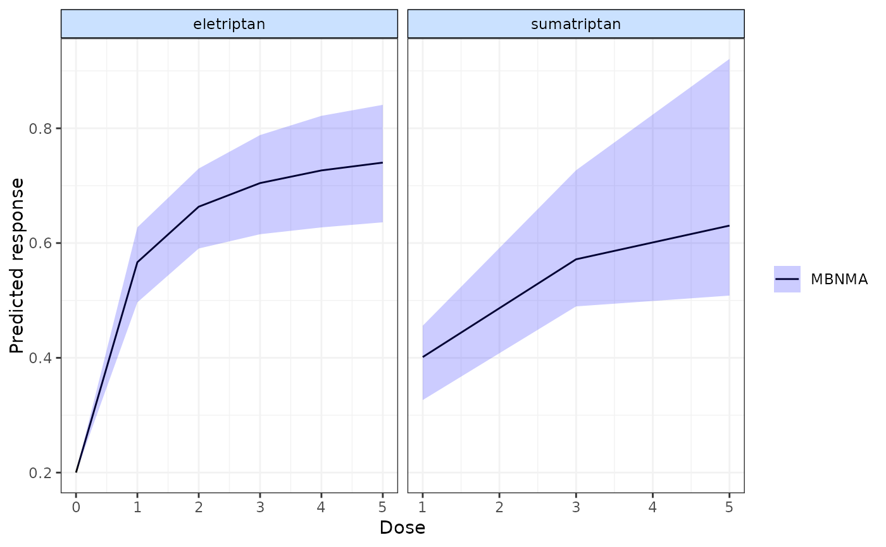

Predict responses for different doses of agents in a given population based on MBNMA dose-response models
predict.mbnma.RdUsed to predict responses for different doses of agents or to predict the results of a new study. This is calculated by combining relative treatment effects with a given reference treatment response (specific to the population of interest).
# S3 method for mbnma
predict(
object,
n.doses = 30,
exact.doses = NULL,
E0 = 0.2,
synth = "fixed",
lim = "cred",
regress.vals = NULL,
...
)Arguments
- object
An S3 object of class
"mbnma"generated by running a dose-response MBNMA model- n.doses
A number indicating the number of doses at which to make predictions within each agent. The default is
30.- exact.doses
A list of numeric vectors. Each named element in the list corresponds to an agent (either named similarly to agent names given in the data, or named correspondingly to the codes for agents given in
mbnma) and each number within the vector for that element corresponds to a dose of the agent for which to predict responses. Doses can only take positive values. For models fitted usingdspline()making predictions at only a very small number of doses for each agent may throw an error since it can make the spline difficult to identify.- E0
An object to indicate the value(s) to use for the response at dose = 0 (i.e. placebo) in the prediction. This can take a number of different formats depending on how it will be used/calculated. The default is
0.2since a default of0will typically lead to non-sensical predictions unless an identify link function has been used for the MBNMA model inobject.numeric()A single numeric value representing the deterministic response at dose = 0, given on the natural scale - so for binomial data, proportions should be given and for Poisson data, a rate should be given.character()A single string representing a stochastic distribution for the response at dose = 0, given on the natural scale - so for binomial data, proportions should be given and for Poisson data, a rate should be given. This is specified as a random number generator (RNG) given as a string, and can take any RNG distribution for which a function exists in R. For example:"rnorm(n, 7, 0.5)".data.frame()A data frame containing data in the long format (one row per study arm) to be meta-analysed to estimate the dose = 0 (placebo) response. This could be a set of observational studies that are specific to the population on which to make predictions, or it can be a subset of the study arms within the MBNMA dataset that investigate placebo. Seeref.synth()
- synth
A character object that can take the value
"fixed"or"random"to specify the the type of pooling to use for synthesis ofE0if a data frame has been provided for it. Using"random"rather than"fixed"forsynthwill result in wider 95\% CrI for predictions.- lim
Specifies calculation of either 95% credible intervals (
lim="cred") or 95% prediction intervals (lim="pred").- regress.vals
A named numeric vector of effect modifier values at which results should be predicted. Named elements must match variable names specified in
regress.varswithin the MBNMA model.- ...
Arguments to be sent to
R2jags::jags()for synthesis of the network reference treatment effect (usingref.synth())
Value
An S3 object of class mbnma.predict that contains the following
elements:
predictsA named list of matrices. Each matrix contains the MCMC results of predicted responses at follow-up times specified intimesfor each treatment specified intreatslikelihoodThe likelihood used in the MBNMA modelobjectlinkThe link function used in the MBNMA modelobjectnetworkThe dataset inmbnma.networkformatE0A numeric vector of value(s) used for E0 in the prediction, on the link scale.
Details
The range of doses on which to make predictions can be specified in one of two ways:
Use
max.doseandn.dosesto specify the maximum dose for each agent and the number of doses within that agent for which to predict responses. Doses will be chosen that are equally spaced from zero to the maximum dose for each agent. This is useful for generating plots of predicted responses (using[plot-mbnma.predict]) as it will lead to fitting a smooth dose-response curve (providedn.dosesis sufficiently high).Use
exact.dosesto specify the exact doses for which to predict responses for each agent. This may be more useful when ranking different predicted responses using[rank-mbnma.predict]
Examples
# \donttest{
# Using the triptans data
network <- mbnma.network(triptans)
#> Values for `agent` with dose = 0 have been recoded to `Placebo`
#> agent is being recoded to enforce sequential numbering
# Run an Emax dose-response MBNMA
emax <- mbnma.run(network, fun=demax(), method="random")
#> `likelihood` not given by user - set to `binomial` based on data provided
#> `link` not given by user - set to `logit` based on assigned value for `likelihood`
#> Compiling model graph
#> Resolving undeclared variables
#> Allocating nodes
#> Graph information:
#> Observed stochastic nodes: 182
#> Unobserved stochastic nodes: 197
#> Total graph size: 4115
#>
#> Initializing model
#>
###########################
###### Specifying E0 ######
###########################
#### Predict responses using deterministic value for E0 ####
# Data is binomial so we specify E0 on the natural scale as a probability
pred <- predict(emax, E0 = 0.2)
# Specifying non-sensical values will return an error
#pred <- predict(emax, E0 = -10)
### ERROR ###
#### Predict responses using stochastic value for E0 ####
# Data is binomial so we might want to draw from a beta distribution
pred <- predict(emax, E0 = "rbeta(n, shape1=1, shape2=5)")
# Misspecifying the RNG string will return an error
#pred <- predict(emax, E0 = "rbeta(shape1=1, shape2=5)")
### ERROR ###
#### Predict responses using meta-analysis of dose = 0 studies ####
# E0 is assigned a data frame of studies to synthesis
# Can be taken from placebo arms in triptans dataset
ref.df <- network$data.ab[network$data.ab$agent==1,]
# Synthesis can be fixed/random effects
pred <- predict(emax, E0 = ref.df, synth="random")
#> [1] "Data frame must contain only data from reference treatment"
#> Values for `agent` with dose = 0 have been recoded to `Placebo`
#> agent is being recoded to enforce sequential numbering
#> Compiling model graph
#> Resolving undeclared variables
#> Allocating nodes
#> Graph information:
#> Observed stochastic nodes: 66
#> Unobserved stochastic nodes: 68
#> Total graph size: 1222
#>
#> Initializing model
#>
######################################################################
#### Specifying which doses/agents for which to predict responses ####
######################################################################
# Change the number of predictions for each agent
pred <- predict(emax, E0 = 0.2, n.doses=20)
pred <- predict(emax, E0 = 0.2, n.doses=3)
# Specify several exact combinations of doses and agents to predict
pred <- predict(emax, E0 = 0.2,
exact.doses=list("eletriptan"=c(0:5), "sumatriptan"=c(1,3,5)))
plot(pred) # Plot predictions

# Print and summarise `mbnma.predict` object
print(pred)
#> ========================
#> Summary of Predictions
#> ========================
#>
#> |Agent | Min dose| Max dose| N doses|
#> |:-----------|--------:|--------:|-------:|
#> |Placebo | 0| 0| 1|
#> |eletriptan | 0| 5| 6|
#> |sumatriptan | 1| 5| 3|
#>
summary(pred)
#> agent dose mean sd 2.5% 25% 50%
#> 1 Placebo 0 0.2000000 NA 0.2000000 0.2000000 0.2000000
#> 2 eletriptan 0 0.2000000 NA 0.2000000 0.2000000 0.2000000
#> 3 eletriptan 1 0.5667182 0.03161484 0.5004489 0.5465442 0.5677951
#> 4 eletriptan 2 0.6644446 0.03536508 0.5942545 0.6413586 0.6653473
#> 5 eletriptan 3 0.7058020 0.04343092 0.6209225 0.6758062 0.7063844
#> 6 eletriptan 4 0.7281021 0.04894532 0.6329985 0.6949343 0.7281201
#> 7 eletriptan 5 0.7419235 0.05259465 0.6403380 0.7061944 0.7420012
#> 8 sumatriptan 1 0.3722967 0.03600114 0.3252883 0.3446361 0.3594810
#> 9 sumatriptan 3 0.6292786 0.06364206 0.5027186 0.5779550 0.6439601
#> 10 sumatriptan 5 0.7705294 0.12809243 0.5242722 0.6444390 0.8281514
#> 75% 97.5%
#> 1 0.2000000 0.2000000
#> 2 0.2000000 0.2000000
#> 3 0.5884381 0.6257365
#> 4 0.6877116 0.7320903
#> 5 0.7343300 0.7895684
#> 6 0.7600582 0.8251208
#> 7 0.7766864 0.8466883
#> 8 0.4003228 0.4498817
#> 9 0.6781755 0.7302468
#> 10 0.8746868 0.9214735
# Plot `mbnma.predict` object
plot(pred)
 # }
# }